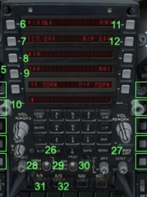

TACAN, ang. Tactical Air Navigation, wojsk. system radionawigacji lotn. bliskiego zasięgu;
umożliwia pomiar odległości i kierunku do radiolatarni systemu, pracującej na podobnej zasadzie jak w
systemie DME, w pasmie częst. 960–1215 MHz; przy zasięgu do 370 km, pomiar odległości jest
obarczony błędem nie większym niż 600 m, a pomiar kierunku błędem do 2°; radiolatarnie systemu TACAN
współpracują z wszystkimi urządzeniami zapytującymi DME, a radiolatarnie systemu DME umożliwiają pomiar
odległości pokładowym układom TACAN; wspólna lokacja radiolatarni TACAN i radiolatarni VOR tworzy system
VORTAC umożliwiający cywilnym statkom powietrznym dokonywanie pomiaru odległości od radiolatarni TACAN,
a namiaru kątowego od radiolatarni systemu VOR; wojsk. statki powietrzne dokonują pomiaru odległości i
namiaru kątowego od radiolatarni systemu TACAN; w ten sposób z jednego systemu są obsługiwane zarówno cywilne,
jak i wojsk. statki powietrzne.
6. TACAN digits (push digits to select)
7. TACAN power
8. TACAN A/A A/G selector
9. IFF power
10. UHF channel number selector
11. Autopilot NAV/HDG select
12. Autopilot ALT/ATT select
26. Autopilot enable
27. Emission Limit power switch
28. HUD brightness intensity knob
29. HUD REJ selector (Drift C/O)
30. HUD Day/Night/Auto selector
31. Air to Air selection button
32.Air to Ground selection button
YF-23